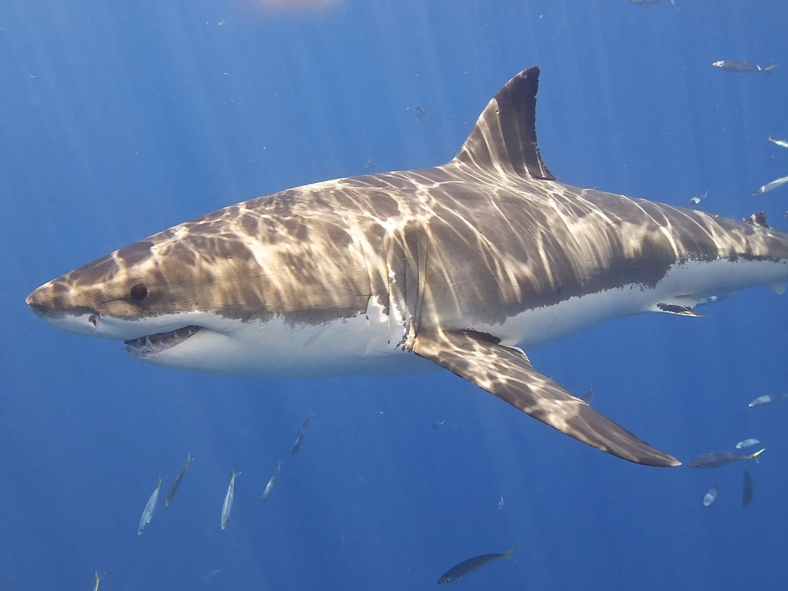

Vamos explorar alguns dos fascinantes animais que vivem no aquário marinho!
Tubarão

Os tubarões são peixes cartilaginosos conhecidos por sua força e agilidade. Eles são predadores no topo da cadeia alimentar marinha e desempenham um papel crucial na manutenção do equilíbrio dos ecossistemas oceânicos.